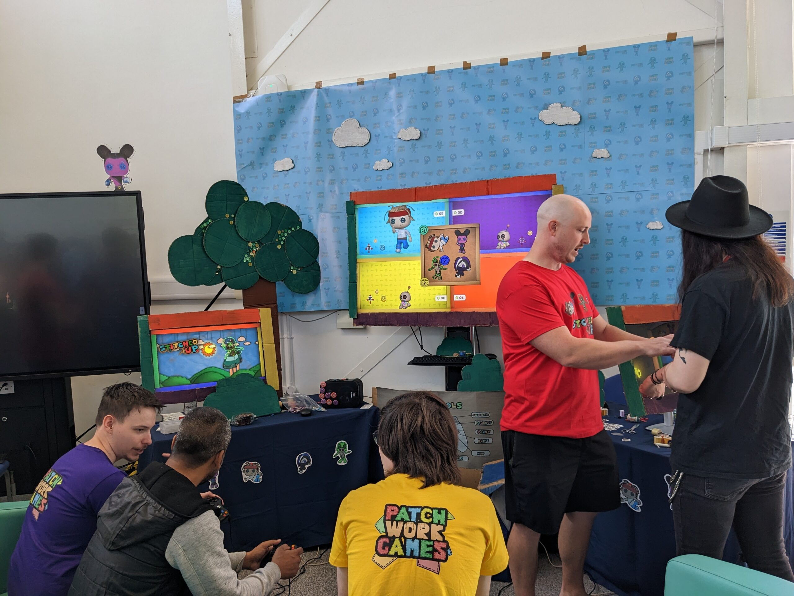

Stitched Up
Stitched Up was a final year university project that I contributed to during my second year. I was responsible for prototyping transition animations and programming UI elements including the character selection screen. You can find the game here.
One of my tasks was the code implementation of the character select screen.
The game was invited to the annual GAMEX showcase.
The game also won the COMX award for best trailer!
It was a lot of fun to work in such a large team! Here are some more images of the game and from GAMEX: